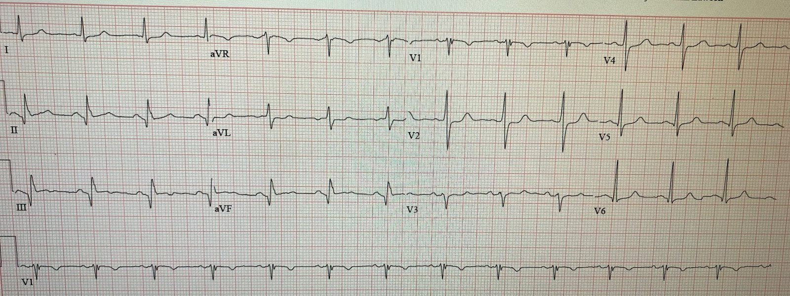
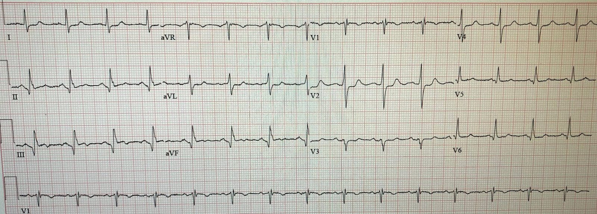
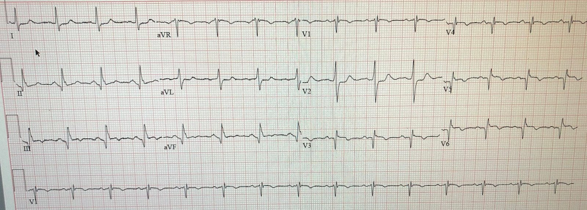
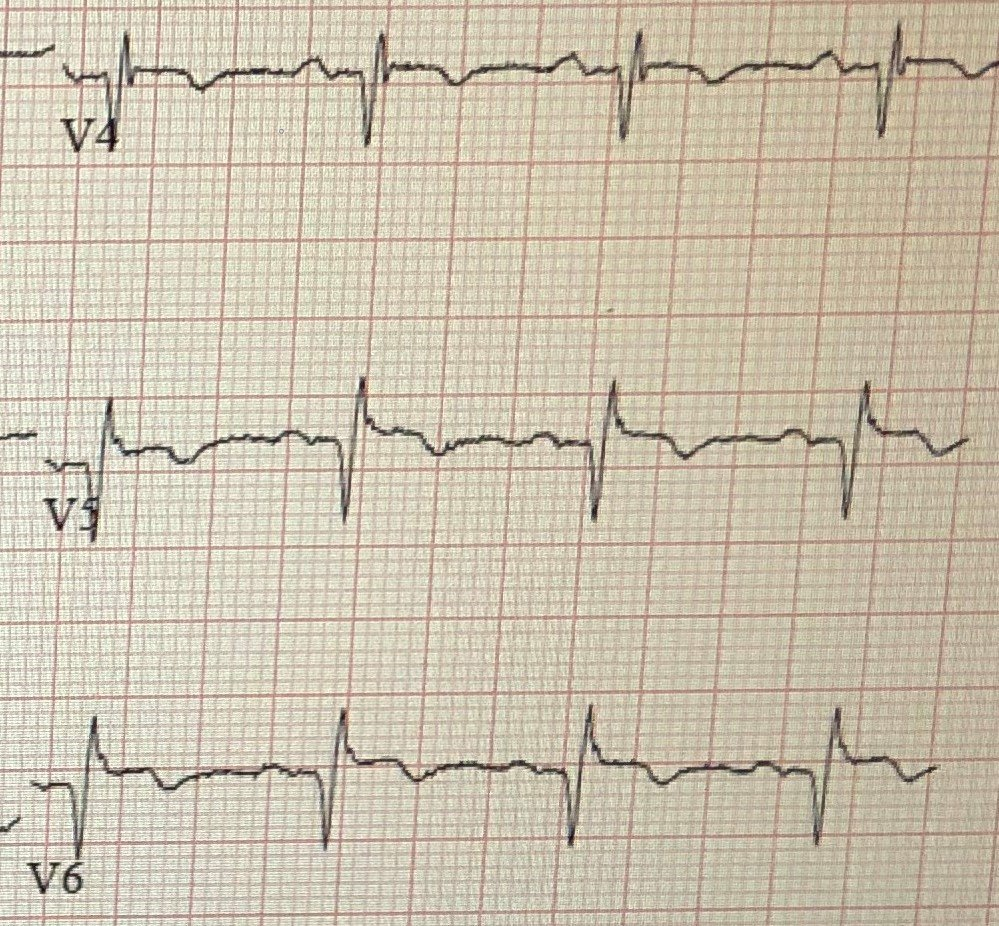
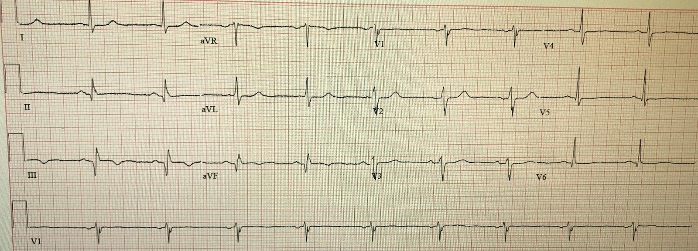
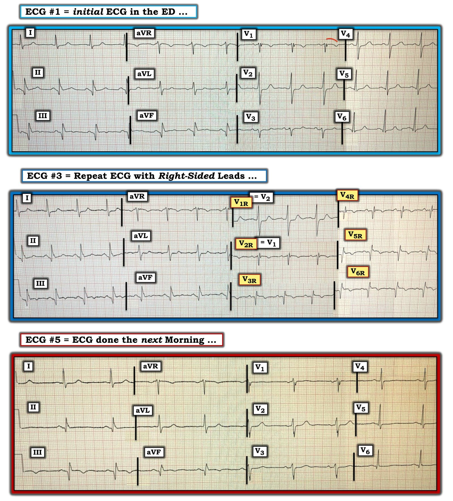

19/07/2020 — Bước tiếp theo hữu ích trong đánh giá bệnh nhân đau ngực có điện tâm đồ này là gì?
Bản dịch tiếng Việt của bài "What is a useful next step in the evaluation of this patient with Chest pain and this ECG?" – Dr. Smith’s ECG Blog. Giữ nguyên toàn bộ 6 hình ảnh của bản gốc.
Tác giả: Pendell Meyers (do Daryl Williams gửi — Smith biên tập).
= = =
Một người đàn ông sáu mươi mấy tuổi có tiền sử bệnh động mạch vành (CAD) và phẫu thuật bắc cầu chủ vành (CABG) bị đau ngực và cảm giác đè ép ngực từng lúc trong ba ngày. Trong thời gian này, ông đã đến khám bác sĩ chăm sóc ban đầu; bác sĩ nghi các triệu chứng có liên quan đến tiêu hóa và tăng liều thuốc ức chế bơm proton (PPI). Đến ngày thứ ba, cơn đau trở nên dữ dội hơn và lan lên cổ và tay trái, điều này khiến bệnh nhân nhớ lại các triệu chứng nhồi máu cơ tim trước đây, nên ông đến khoa cấp cứu. Không rõ ông đã có triệu chứng liên tục trong bao lâu trong ba ngày đó.
Đây là điện tâm đồ lúc phân loại (triage) của ông (không có điện tâm đồ cũ nào trong hệ thống của chúng tôi):


— Bạn nghĩ gì? —
= = =
Các dấu hiệu thô:
- Phức bộ QRS hẹp, bình thường (ngoài các sóng Q)
- ST chênh lên (STE) 0,5 mm ở III và aVF
- ST chênh xuống (STD) ở I và aVL, V2-V5 (tối đa ở V2)
- Sóng Q ở II, III và aVF, cùng với sóng Q rất nhỏ ở V5 và V6
= = =
Diễn giải:
- OMI thành dưới-sau cấp đến bán cấp
- ST chênh lên thành dưới kèm sóng Q và ST chênh lên nhẹ mà không có sóng T tối cấp rõ ràng có thể là cấp, bán cấp, mạn (phình thất trái thành dưới), hoặc cấp trên nền mạn (nhồi máu cơ tim mới chồng lên phình thất trái cũ.
- Sóng R cao ở V2 có thể do nhồi máu cơ tim thành sau cũ hoặc bán cấp.
- Nhồi máu cơ tim cũ với ST chênh lên tồn tại dai dẳng, cũng giống như nhồi máu cơ tim cấp, thật sự có thể có ST chênh xuống soi gương (aVL), và nhồi máu cơ tim thành sau cũ (phình thành sau) có thể có ST chênh xuống dai dẳng. Vì vậy, sóng R lớn ở V2 kèm ST chênh xuống có thể là cũ hoặc bán cấp, cũng như có thể là cấp.
= = =
Không có cách nào tốt để phân biệt OMI thành dưới với phình thành dưới. Cả hai đều có thể có sóng QR và không có sóng T lớn. Điều này trái ngược với phình thất trái thành trước, vốn được phân biệt với OMI thành trước cấp nhờ không có sóng T tối cấp (nếu chẩn đoán phân biệt của bạn là OMI thành trước hay phình thất trái, và thời gian đau ngực dưới 6 giờ, thì nếu có một chuyển đạo trong V1-V4 có tỷ số T/QRS lớn hơn 0,36, nhiều khả năng nhất đó là tổn thương cấp.
- Vì vậy, trong ca này với triệu chứng đang tiếp diễn, chúng ta phải mặc định rằng các dấu hiệu điện tâm đồ này là cấp hoặc bán cấp. Dĩ nhiên, điện tâm đồ này không đạt tiêu chuẩn STEMI.
- Như mọi khi, bạn phải nhớ rằng điện tâm đồ không phân biệt được các căn nguyên của tổn thương xuyên thành cấp; nó chỉ đơn giản phản ánh những tình trạng mà các tế bào cơ tim đang trải qua.
- Người thầy thuốc phải quyết định trên lâm sàng cần làm gì với chẩn đoán phân biệt này, bao gồm OMI, bệnh cơ tim takotsubo, viêm cơ tim khu trú, v.v. Tuy nhiên, OMI áp đảo là căn nguyên thường gặp nhất và điều trị được trong chẩn đoán phân biệt (chỉ riêng điện tâm đồ này thì OMI đã là căn nguyên có khả năng nhất, và có khả năng áp đảo khi xét đến bệnh sử mà chúng ta có về bệnh nhân).
- Hơn nữa, các chẩn đoán khác về cơ bản là chẩn đoán loại trừ, chỉ được đưa ra sau khi chụp mạch vành âm tính. (Tầm quan trọng của hiểu biết này — là bạn sẽ được chuẩn bị cho những lần hiếm hoi khi thông tim hoàn toàn âm tính, và bạn sẽ hiểu rằng quyết định thông tim vẫn là quyết định đúng).
= = =
Nhóm điều trị lập tức nhận ra bệnh sử đáng lo ngại cùng các dấu hiệu tinh tế nhưng chắc chắn trên điện tâm đồ, và đã gọi bác sĩ can thiệp đến tận giường bệnh để đánh giá thông tim cấp cứu.
- Trong lúc đó, nhóm quyết định ghi các chuyển đạo phía sau và chuyển đạo bên phải, phòng khi chúng có thể giúp thuyết phục bác sĩ can thiệp nhận ra các dấu hiệu trên điện tâm đồ 12 chuyển đạo chuẩn.
Điện tâm đồ này được ghi nhãn là chuyển đạo phía sau trong hồ sơ, nhưng không rõ liệu đây có thật sự là chuyển đạo phía sau hay không:


Đúng là điện thế ở V4-V6 thấp hơn, dù vẫn cao hơn mức dự kiến đối với chuyển đạo phía sau — vì vậy vẫn chưa chắc chắn liệu đây có thật sự là chuyển đạo phía sau hay không. Dù sao đi nữa, điện tâm đồ này không rõ ràng hơn các điện tâm đồ trước (tức là, Vẫn có ST chênh lên hoặc sóng T tối cấp ở các chuyển đạo này). [người dịch: nguyên văn ghi “There is still STE or hyperacute T waves”, theo ngữ cảnh nhiều khả năng tác giả muốn nói “vẫn KHÔNG có ST chênh lên hay sóng T tối cấp”]
= = =
Nhóm báo cáo rằng các chuyển đạo phía sau hoàn toàn không cho thấy ST chênh lên nào, và tiếp theo đã thử các chuyển đạo bên phải (V3-V6 thực chất là V3R-V6R, V1 và V2 giữ nguyên):


Có ST chênh lên từ 0,5 đến 1,0 mm ở các chuyển đạo V5 và V6, kèm sóng Q.
= = =
Đây là các chuyển đạo bên phải được phóng to:


Mặc dù vẫn chưa rõ liệu hướng dẫn ACC/AHA có thật sự, chính thức công nhận bất kỳ tiêu chuẩn tương đương STEMI nào ở các chuyển đạo phía sau và/hoặc bên phải hay không — một số thầy thuốc tin rằng có. Điểm cắt chuẩn (hoặc được đề xuất) là 0,5 mm ở một chuyển đạo bên phải hoặc phía sau đơn lẻ.
= = =
Sau khi ghi điện tâm đồ chuyển đạo phía sau này, và đã có thời gian xem xét bệnh sử nguy cơ cao cùng các triệu chứng lâm sàng của bệnh nhân, bác sĩ tim mạch đồng ý rằng có chỉ định thông tim cấp cứu.
- Khi thông tim, họ phát hiện cầu nối tĩnh mạch hiển (SVG) đến RCA bị tắc hoàn toàn 100% do huyết khối cấp, và không thể đưa dây dẫn qua được, vì vậy không thể can thiệp.
- Bệnh nhân cũng được đặt stent vào OM1 (nhánh bờ tù) hẹp 99%, nhưng không rõ tổn thương này có phải là thủ phạm cấp tính hay không.
= = =
Kết quả chụp mạch vành có giải thích được hoàn toàn các dấu hiệu này không?
Với cả hai tổn thương có thể là thủ phạm này, việc các dấu hiệu tối đa nằm ở các chuyển đạo phía bên phải có vẻ hơi bất thường, và chúng tôi không chắc liệu một trong hai tổn thương này có giải thích đầy đủ các dấu hiệu điện tâm đồ hay không.
- Thông thường, nhánh bờ thất phải cấp máu cho thành tự do thất phải và tạo ra các dấu hiệu khu trú nhiều nhất ở các chuyển đạo bên phải. (Nhánh bờ thất phải xuất phát từ RCA đoạn gần, ngay sau lỗ xuất phát, và do đó thường bị ảnh hưởng trong các trường hợp tắc RCA đoạn rất gần hoặc tắc lỗ xuất phát (ostial)).
- Bệnh nhân này có tắc mạn tính RCA đoạn giữa, với cầu nối đến RCA đoạn xa — điều này gợi ý rằng RCA đoạn gần vẫn còn thông. Vì thế hơi khó hiểu khi tắc cầu nối đến RCA đoạn xa lại liên quan đến vùng được cho là do nhánh bờ thất phải cấp máu. Dù vậy — có rất nhiều biến thể giải phẫu, và rốt cuộc đây không phải là phần quan trọng nhất của thực hành lâm sàng.
= = =
Troponin T lần thứ nhất có kết quả 0,36 ng/mL. Troponin lần thứ hai là 0,27, và sau đó không đo thêm troponin nữa.
- Đây là điện tâm đồ của ông vào sáng hôm sau:


Các độ lệch ST đã cải thiện so với điện tâm đồ trước — nhưng vẫn còn một ít ST chênh lên ở III và aVF, kèm ST chênh xuống ở I và aVL. Không còn ST chênh xuống ở các chuyển đạo trước. Có sóng T đảo ngược do tái tưới máu ở III và aVF, và sóng T tái tưới máu thành sau ở V2,V3 so với các điện tâm đồ trước.
= = =
Bệnh nhân hồi phục tốt.
= = =
Những điểm cần học:
- Mặc dù trên blog này chúng tôi thường giải thích rằng chuyển đạo phía sau và chuyển đạo bên phải khó có thể bổ sung thông tin quan trọng cho việc đọc điện tâm đồ 12 chuyển đạo chuẩn của chuyên gia — chúng tôi thừa nhận rằng chúng có thể bổ sung cho các dấu hiệu tinh tế, làm lộ ra các hình ảnh tổn thương mà nếu không thì có thể bị bỏ qua. Đây chính là trường hợp ở ca này: các dấu hiệu tinh tế trên 12 chuyển đạo chuẩn đã làm lộ ra ST chênh lên rõ ràng ở các chuyển đạo bên phải.
- Nếu các hướng dẫn thật sự công nhận chuyển đạo phía sau và chuyển đạo bên phải trong một phiên bản nào đó của tiêu chuẩn STEMI — thì chúng chỉ đòi hỏi 0,5 mm ở một chuyển đạo đơn lẻ.
- Đau đang tiếp diễn và/hoặc bằng chứng thiếu máu cục bộ đang tiếp diễn trên điện tâm đồ nên được hiểu là cơ tim đang tiếp tục bị mất (và do đó là cơ hội đang tiếp diễn để cứu vớt cơ tim) — bất kể thời điểm khởi phát triệu chứng của bệnh nhân hay sóng Q trên điện tâm đồ, đặc biệt khi bạn có lựa chọn thực hiện PCI.
= = =
======================================
BÌNH LUẬN CỦA TÔI, bởi KEN GRAUER, MD (19/7/2020 — cập nhật cho WordPress ngày 18/9/2026):
Một ca bệnh sâu sắc của các bác sĩ Williams, Meyers & Smith — làm nổi bật việc sử dụng có chọn lọc các chuyển đạo bên phải có thể cực kỳ hữu ích khi hình ảnh điện tâm đồ từ bản ghi 12 chuyển đạo chuẩn còn mơ hồ (equivocal).
- Bệnh nhân trong ca hôm nay là một người đàn ông 60 mấy tuổi có bệnh mạch vành đã biết, bao gồm tiền sử phẫu thuật bắc cầu chủ vành. Ông đến khoa cấp cứu với triệu chứng từng lúc khó chịu ở ngực trong 3 ngày trước đó — trở nên liên tục và dữ dội hơn vào ngày nhập viện.
- Tôi đã đánh số các bản ghi ở trên theo thứ tự trình bày — và chỉ bình luận về 3 bản ghi, mà tôi đã ghép lại cho rõ trong Hình 1.
= = =
CÁC CÂU HỎI:
Dr. Meyers đã nêu các dấu hiệu điện tâm đồ chính trong phần bàn luận của anh ở trên. Nhằm tập trung vào một số điểm tinh tế trong đọc điện tâm đồ — tôi xin đặt ra các câu hỏi tu từ sau:
- Ở điện tâm đồ #1 — BẠN nên nghĩ đến ĐIỀU GÌ khi xem xét hình ảnh lần lượt của các chuyển đạo V1, V2 và V3? Lẽ ra có thể (lẽ ra nên) làm gì? — khi mục tiêu của nhóm là “giúp thuyết phục bác sĩ can thiệp” thực hiện thông tim cấp cứu?
- Điện tâm đồ 12 chuyển đạo chuẩn TỐT đến mức nào trong việc dự đoán nhồi máu thất phải cấp? Có dấu hiệu nào mà chúng ta tìm kiếm xuất hiện trên điện tâm đồ-1 không?
- Ở điện tâm đồ #3 — NHỮNG chuyển đạo bên phải nào bất thường?
- So với điện tâm đồ #1 — BAO NHIÊU trong 12 chuyển đạo ở điện tâm đồ #5 cho thấy thay đổi có ý nghĩa? GỢI Ý: Nếu câu trả lời của bạn ít hơn 9 — thì Hãy đếm lại!
= = =
Hình 1: Bản ghi thứ 1, thứ 3 và bản ghi cuối cùng trong ca hôm nay.


= = =
Suy nghĩ của tôi về ca hôm nay:
Ngay từ đầu tôi xin nhấn mạnh rằng nhiều điểm tôi nêu bật dưới đây là tinh tế và nâng cao — nhưng tất cả đều liên quan đến ca hôm nay:
- Trước hết, xem xét điện tâm đồ #1: Hình dạng phức bộ QRST ở chuyển đạo V2 khiến tôi thấy kỳ quặc — khi xét đến hình dạng của các chuyển đạo lân cận V1 và V3. Về mặt sinh lý, tôi thấy không hợp lý khi có thể đi từ một phức bộ biên độ nhỏ gồm 4 thành phần (rSr’s’) ở chuyển đạo V1 — sang những gì chúng ta thấy ở chuyển đạo V2 — rồi ngay sau đó là một phức bộ biên độ rất nhỏ khác với sóng r bé xíu và biên độ sóng T giảm ở chuyển đạo V3 — rồi ngay sau đó lại là một thay đổi chuyển tiếp đột ngột nữa xảy ra ở chuyển đạo V4. Lời giải thích hợp lý nhất cho chuỗi diễn biến rất bất thường này là hẳn phải có đặt không đúng vị trí một hoặc nhiều điện cực ngực phía trước.
- Cần lưu ý: Điện tâm đồ ghi vào sáng hôm sau ( = điện tâm đồ #5) — cho thấy trình tự chuyển tiếp hình dạng QRST hợp lý hơn nhiều khi đi từ chuyển đạo V1-sang-V2-sang-V3-sang-V4, V5 và V6. Điều này ủng hộ giả định của tôi rằng hẳn đã có đặt điện cực sai ở một hoặc nhiều điện cực ngực phía trước trên điện tâm đồ #1.
- Điểm cần học: Vì nhóm cấp cứu đã nghi ngờ đúng rằng họ có thể gặp khó khăn trong việc “thuyết phục” bác sĩ can thiệp thực hiện thông tim cấp cứu — có lẽ sẽ hữu ích nếu ngay lập tức ghi lại điện tâm đồ #1 đồng thời kiểm tra vị trí đặt điện cực đúng trên điện tâm đồ ghi lại này. Nhận ra việc đặt sai điện cực ngực — và ngay lập tức ghi lại điện tâm đồ khi đang tìm manh mối của một quá trình cấp tính đang tiến triển nhiều khả năng có xác suất thành công cao hơn trong ca này so với việc ghi các chuyển đạo phía sau.
- Chuyển đạo phía sau không nhạy trong phát hiện nhồi máu thành sau cấp. Tôi xin nhấn mạnh rằng tôi không nói bạn không bao giờ nên ghi chuyển đạo phía sau — mà là, với một chút luyện tập — có thể chẩn đoán OMI thành sau cấp nhanh hơn nhiều, chỉ đơn giản bằng điện tâm đồ 12 chuyển đạo chuẩn (tức là, bằng cách xem xét hình ảnh soi gương (mirror-image) của các chuyển đạo trước V1, V2 và/hoặc V3). Do đó, sóng R cao bất ngờ + ST chênh xuống dạng bậc thềm (phẳng) với phần cuối sóng T cao bất ngờ ở chuyển đạo V2 của điện tâm đồ #1 cho bạn biết rằng đã có nhồi máu thành sau, dù chưa rõ tuổi.
- Về lâm sàng — khi không có điện tâm đồ cũ để so sánh ở người đàn ông 60 mấy tuổi có bệnh mạch vành đã biết này, nay đến khám vì đau ngực mới tăng dần — thì “Câu trả lời” (tức là, nhu cầu thông tim chẩn đoán/điều trị kịp thời) đã rõ ràng từ điện tâm đồ 12 chuyển đạo chuẩn ở điện tâm đồ #1.
- Nhìn lại, tôi không nghĩ mình từng gặp ca nào mà chuyển đạo phía sau cho tôi biết điều gì đó tôi chưa biết từ việc dùng điện tâm đồ 12 chuyển đạo chuẩn
- (Để biết thêm về cách dùng nghiệm pháp soi gương (Mirror Test) trong đánh giá điện tâm đồ nhồi máu cơ tim thành sau cấp — XEM Bình luận của tôi ở cuối bài ngày 16 tháng Hai năm 2019 trên Dr. Smith’s ECG Blog).
= = =
Sử dụng điện tâm đồ 12 chuyển đạo chuẩn để phát hiện nhồi máu thất phải (RV MI) cấp:
Trái với các chuyển đạo phía sau, vốn mang lại lợi ích hạn chế (nhiều nhất là vậy) trong phát hiện nhồi máu cơ tim thành sau cấp khi chẩn đoán này chưa rõ từ 12 chuyển đạo chuẩn — các chuyển đạo bên phải có thể tỏ ra vô giá trong việc gợi ý RV MI cấp mà không rõ trên điện tâm đồ 12 chuyển đạo chuẩn.
- Nhồi máu cơ tim thành dưới cấp đi kèm tổn thương thất phải cấp ở hơn 1/4 số ca. Điều này thật sự có ý nghĩa lâm sàng — vì diễn biến lâm sàng, tiên lượng và điều trị của RV MI cấp có ý nghĩa huyết động khác biệt rõ rệt so với nhồi máu cơ tim thất trái cấp (tức là, hạ huyết áp, giảm thể tích tuần hoàn tương đối, quá nhạy cảm với nitroglycerin, v.v. khi có tổn thương thất phải cấp).
- Khoảng 80-90% người có tuần hoàn vành ưu thế phải — trong đó RCA (Right Coronary Artery — động mạch vành phải) là mạch ưu thế, cấp máu cho thất phải sớm trên đường đi của nó — rồi tiếp tục (sau khi cấp máu cho thất phải) thành PDA (Posterior Descending Artery — động mạch liên thất sau) chạy dọc mặt dưới của tim để cấp máu cho thành sau và dưới của thất trái.
- Ở khoảng 15% người — LCx (Left Circumflex — động mạch mũ trái) là động mạch ưu thế — khi đó RCA là một mạch nhỏ hơn nhiều — và LCx cho ra PDA, qua đó cấp máu cho thành dưới và thành sau, cũng như thành bên của thất trái. (BẤM VÀO ĐÂY — Để biết thêm về tuần hoàn vành).
Ở bệnh nhân nhồi máu cơ tim thành dưới cấp — các yếu tố dự báo trên điện tâm đồ của tắc RCA cấp (thay vì tắc LCx ưu thế) bao gồm: i) ST chênh lên ở chuyển đạo III > II; — ii) ST chênh xuống rõ rệt ở chuyển đạo aVL; — iii) Nếu có ST chênh lên ở các chuyển đạo V5 và V6 — thì mức chênh này ít hơn mức ST chênh lên ở chuyển đạo III; — và, iv) Có bằng chứng điện tâm đồ của RV MI cấp.
- ĐIỂM THEN CHỐT (PEARL) #1 — Yếu tố tiên đoán cuối cùng này (iv) trong gạch đầu dòng ở trên chính là “chủ đề” của ca hôm nay — vì chúng ta có thể xác nhận RCA là động mạch “thủ phạm” gây nhồi máu thành dưới cấp NẾU đồng thời có bằng chứng điện tâm đồ của RV MI cấp. Đó là vì LCx không cấp máu cho thất phải. Và, vì thất phải được RCA cấp máu từ sớm trên đường đi của nó — bằng chứng điện tâm đồ của RV MI cấp cho bạn biết có tắc RCA đoạn gần.
- Vì không chuyển đạo nào trong 12 chuyển đạo chuẩn của điện tâm đồ nhìn trực tiếp vào thất phải — độ nhạy của điện tâm đồ trong phát hiện RV MI cấp là không tối ưu. Điều này có nghĩa là trong phần lớn trường hợp — bạn sẽ không thể loại trừ khả năng RV MI cấp nếu chỉ dùng 12 chuyển đạo chuẩn.
- Dù đã nói như trên — chuyển đạo V1 là chuyển đạo gần nhất với việc nhìn thấy hoạt động điện ở thất phải — vì vậy, như chúng tôi đã trình bày trong nhiều bài trên Dr. Smith’s ECG Blog — NẾU có ST chênh lên bất thường ở chuyển đạo V1 (nhưng không có ở các chuyển đạo trước khác) đi kèm đau ngực mới khởi phát và ST chênh lên cấp ở các chuyển đạo thành dưới — thì điện tâm đồ 12 chuyển đạo chuẩn có thể gợi ý mạnh RV MI cấp do tắc cấp RCA đoạn gần. (Chỉ là một ví dụ về chẩn đoán bằng điện tâm đồ đối với RV MI cấp từ 12 chuyển đạo chuẩn — Hãy xem bài ngày 7 tháng Mười năm 2019, chú ý phần Bình luận của tôi ở cuối trang).
- ĐIỂM THEN CHỐT (PEARL) #2 — ST chênh lên ở các chuyển đạo ngực bên phải đi kèm RV MI cấp có xu hướng thoáng qua! ST chênh lên ở chuyển đạo bên phải đã được chứng minh là hồi phục ở tới 50% bệnh nhân RV MI cấp trong vòng 12 giờ kể từ khi khởi phát triệu chứng! (Nagam và cs. — Perm. J 2017 ;21:16-105). Điều này có liên quan đến ca hôm nay — vì triệu chứng ở bệnh nhân hôm nay đã khởi phát sớm hơn ít nhất 3 ngày! Phải chăng đây là lý do không thấy ST chênh lên ở chuyển đạo V1 vào lúc điện tâm đồ #1 cuối cùng mới được ghi?
= = =
Có bất kỳ gợi ý nào về RV MI cấp trên điện tâm đồ #1 không?
Mặc dù bằng chứng điện tâm đồ xác định của RV MI cấp rõ ràng là không có trên điện tâm đồ #1 — tôi cho rằng bản ghi này có gợi ý khả năng này!
- Như Dr. Meyers đã nêu — điện tâm đồ #1 cho phép chẩn đoán nhồi máu cơ tim thành dưới có tuổi không xác định. Các sóng Q sâu và rộng ở mỗi chuyển đạo thành dưới cho chúng ta biết đã có nhồi máu thành dưới vào một thời điểm nào đó ở người đàn ông 60 mấy tuổi từng phẫu thuật CABG này. Nhưng, khi không có điện tâm đồ cũ để so sánh — KHÔNG có cách nào biết ST chênh lên nhẹ-nhưng-thật ở các chuyển đạo III và aVF là mới hay cũ. Đoạn khởi đầu ST thẳng đuỗn ở chuyển đạo II của điện tâm đồ #1 có thể là một thay đổi tối cấp — cũng như đoạn ST thẳng đuỗn và gợi ý chênh xuống ở chuyển đạo aVL. Như chúng tôi đã lưu ý trước đó — các thay đổi sóng ST-T rõ rệt nhất trên điện tâm đồ #1 xuất hiện ở chuyển đạo V2 — nhưng cũng có khả năng ngang bằng là tất cả các dấu hiệu này đều cũ.
- ĐIỀU CỐT LÕI: Như Dr. Meyers đã nêu — chúng ta đơn giản là không thể biết chỉ từ điện tâm đồ #1 liệu có một biến cố cấp mới đang diễn ra hay không.
= = =
- ĐIỂM THEN CHỐT (PEARL) #3 — Dù đã nói như trên, nếu bệnh nhân này đang diễn tiến một biến cố cấp — thì hình dạng của đoạn ST ở chuyển đạo V1 là không bình thường (và điều này nên khiến bạn nghi ngờ có RV MI cấp đi kèm). Đặc biệt trong bối cảnh ST chênh xuống thẳng một cách bất ngờ (dạng bậc thềm) ở chuyển đạo V2 của điện tâm đồ #1 — dạng vòm (coving) (đường cong màu ĐỎ trên bản ghi này) của đoạn ST ở chuyển đạo V1 (dù không có ST chênh lên) không phải là điều thường được dự kiến đi kèm nhồi máu thành sau mà chúng ta đã chẩn đoán dựa vào sóng R cao và hình dạng sóng ST-T ở chuyển đạo V2 (Để biết thêm về “tương tác điện tâm đồ” ở các chuyển đạo trước trong bối cảnh cả nhồi máu thành sau lẫn nhồi máu thất phải — XEM Bình luận của tôi ở cuối bài ngày 7 tháng Mười năm 2019).
ĐIỂM THEN CHỐT (PEARL) #4 — Như Dr. Meyers đã nêu, cần các chuyển đạo bên phải để chẩn đoán xác định RV MI cấp trong ca hôm nay (điện tâm đồ #3). Khi các chuyển đạo trước tim được đặt ở bên phải lồng ngực — chuyển đạo V2 trở thành chuyển đạo V1 bên phải ( = V1R) — và — chuyển đạo V1 trở thành chuyển đạo V2 bên phải ( = V2R). Mặc dù một số người thực hành thích giữ nguyên các chuyển đạo chuẩn V1 và V2 — và ghi các chuyển đạo V3R đến V6R khi ghi chuyển đạo bên phải (như đã làm ở trên với điện tâm đồ thứ 3 trong phần bàn luận của Dr. Meyers) — tôi thích đảo vị trí đặt của cả 6 chuyển đạo ngực, như tôi đã làm ở điện tâm đồ #3, vì cách này cho phép tăng tiến hợp lý theo từng chuyển đạo của 6 chuyển đạo bên phải. Việc bạn có hoán đổi chuyển đạo V1 và V2 hay không khi ghi chuyển đạo bên phải hoàn toàn là vấn đề sở thích cá nhân!
- Chuyển đạo đơn lẻ TỐT NHẤT trong các chuyển đạo bên phải để dùng khi đánh giá RV MI cấp là chuyển đạo V4R. Khi có ST chênh lên ≥1 mm ở chuyển đạo V4R — độ nhạy tiến gần 100% và độ chính xác tiên đoán trên 90% trong phát hiện RV MI cấp (Jeffers và cs. — StatPearls - Cập nhật tháng Năm năm 2020).
- Các thông số khác đã được trích dẫn là có giá trị tiên đoán RV MI cấp gồm: i) ST chênh lên ở bất kỳ chuyển đạo bên phải nào khác; — và, ii) Mức ST chênh lên bên phải tương đối tăng dần khi đi sang phải từ chuyển đạo V1R đến chuyển đạo V6R.
- Trên điện tâm đồ #3 — có ST chênh lên ở 5 chuyển đạo bên phải liên tiếp, bắt đầu từ chuyển đạo V2R — và, ST chênh lên bên phải là tối đa ở chuyển đạo V5R và V6R. Các dấu hiệu điện tâm đồ bên phải này xác nhận RV MI cấp!
= = =
Những điểm cuối cùng cần nêu về ca hôm nay liên quan đến việc so sánh điện tâm đồ #5 (được ghi vào sáng hôm sau) — với điện tâm đồ ban đầu ghi tại khoa cấp cứu ( = điện tâm đồ #1). Các dấu hiệu điện tâm đồ mà Dr. Meyers đã nhấn mạnh ở trên dễ quan sát nhất khi đặt hai bản ghi này cạnh nhau, như trong Hình 1.
- Điều thứ 1 cần lưu ý (như tôi đã đề cập ở đầu phần Bình luận của tôi) — là sự tăng tiến của các phức bộ QRST qua các chuyển đạo ngực V1 đến V4 có vẻ hợp lý hơn nhiều trên điện tâm đồ #5, so với hình dạng tuần tự kỳ quặc của các chuyển đạo này trên điện tâm đồ #1. Vì điện tâm đồ #5 được ghi vào ngày sau điện tâm đồ #1 (có lẽ tại khoa nội trú, không còn ở khoa cấp cứu) — nhiều khả năng một kỹ thuật viên điện tâm đồ khác đã thực hiện bản ghi ngày hôm sau này. Do đó — việc so sánh hình dạng các chuyển đạo trước giữa điện tâm đồ #1 và #5 có thể đã bị thay đổi do khác biệt trong vị trí đặt điện cực … (tức là, tôi không biết liệu biên độ sóng R giảm nhiều ở chuyển đạo V2 của điện tâm đồ #5, so với biên độ sóng R của chuyển đạo này trên điện tâm đồ #1, có phải là một hiệu ứng thật liên quan đến nhồi máu thành sau hay không).
- Điều chúng ta có thể chắc chắn nói — là mặc dù kích thước và phân bố của các sóng Q lớn ở thành dưới không thay đổi đáng kể, giờ đây trên điện tâm đồ #5 có gợi ý tinh tế-nhưng-thật về thay đổi sóng ST-T tái tưới máu ở các chuyển đạo thành dưới (tức là, sự dẹt đi của đoạn khởi đầu ST thẳng, tối cấp mà chúng ta đã thấy ở chuyển đạo II của điện tâm đồ #1 — và tiến triển thành sóng T đảo ngược tinh tế-nhưng-thật ở các chuyển đạo III và aVF). Ngoài ra, tôi tin rằng sự tăng tinh tế-nhưng-thật của biên độ sóng T ở chuyển đạo aVL trên điện tâm đồ #5 là hình soi gương của sóng T đảo ngược do tái tưới máu mà chúng ta thấy ở chuyển đạo III.
- Ở các chuyển đạo ngực của điện tâm đồ #5 — dù khó bình luận về thay đổi ở các chuyển đạo trước (do có thể có sai sót trong vị trí đặt điện cực) — đã có sự dẹt đi rõ ràng của sóng ST-T ở các chuyển đạo ngực bên V4, V5 và V6. Tôi diễn giải điều này là bằng chứng bổ sung của thay đổi sóng ST-T do tái tưới máu.
= = =
Xin gửi lời CẢM ƠN tới Dr. Meyers và Dr. Williams vì những hiểu biết sâu sắc mà ca bệnh này mang lại!
= = =
= = =
= = =
= = =